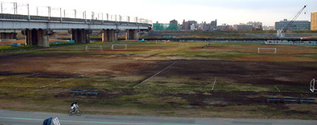

Toda ground
|


|
|
|
- Surface: 3 x 'bald' grass, riverside grounds - A, B & C (not great but beggars can't be choosers). 9:00am - 5:00pm.
- Facilities: No changing rooms or showers, 'Porta' toilets. Vending machines outside of ground for drinks.
- Parking: Yes.
- Location: Take JR Saikyo line to Ukima Funado (25 mins from Shinjuku or Ueno). 10 minute walk to ground from station
MAP
- Rules:. When teams & supporters leave after the match, they will make sure to clean up around the ground, removing all rubbish.
Please follow all regulations at grounds (especially smoking!)
|
|